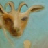
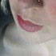
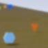
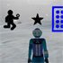
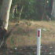
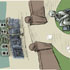
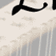
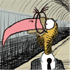
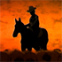

-
StewartHaines
Dance no-one likes watching
-
Scintillascope
- web app
- 2013
- backbonejs+dropboxjs
n. A device for viewing the effect of ionizing radiation, alpha particles, on a fluorescent screen.
Scintillascope is a generator of long-looping procedural animation for projection and performance.
-

Picklets
- iOS app
- 2012
- objc+interwebs
Popup books for digital natives.
Picklets is an app for iPhone and iPod touch for reading interactive books.
Available now for iPhone and iPod touch on the iTunes App Store (in Australia and New Zealand).
-
Picklet Builder
- web app (webkit only)
- 2010
- python+html+js
Digital publishing workflow.
Picklet Builder is a web app providing an online workflow for authoring and publishing digital popup books.
What is a picklet?
-
iRateThat
- web app for iPhone
- 2010
- html+js
All signal. No chattr.
iRateThat is a web app for the iPhone and iPod touch that shows your friends how you're feeling about something.
I rate that seven and a half.
-

Tumbalina's Empire
- portfolio site
- 2009
- flash+php+javascript
Kaye Freeman's portfolio of visual art presented as a dreamy Flash site with proper browser integration. Site design by Sugar Power.
Some notes on browser integration of a Flash site.
-

lintmuseum.com
Sugar Power is an illustrator and fledgeling stylist. She still curates the lintmuseum.
-
colony @ Life.lab
- urban art installation
- 2008
- objc+osc
A Digital Harbour, Docklands public art commission from Troy Innocent. Motion-sensitive (via webcams) ambient sound and light installation (driven by Max/MSP) with iPhone as a remote control.
Some notes on the Colony project.
-

eidosand
- virtual world
- 2008
- python+c++
A nonverbal virtual world created at the Centre for Electronic Media Arts at Monash University. Using the Torque Game Engine with clients available for Mac OS X and MS Windows.
-
fieldofplay.net
- online game
- 2007
- actionscript+php+mobile java
Field of Play is an urban art environment by Troy Innocent at Digital Harbour in Melbourne. The lights in Harbour Lane are controlled in sync with a multiplayer game played on the web (Flash) or via a mobile phone (mobile java).
-

Literacies of Speed
- online game
- 2006
- coding+mapping+modeling
Working with Troy Innocent at the Centre for Electronic Media Arts at Monash University. Developing a multiplayer environment with the Torque Game Engine to explore the design of symbolic language for rapid communication.
-
A Stowaway's Guide to the Pacific
- interactive adventure
- 2006
- coding+animation
An interactive web-based docu-drama designed for 8-12 year olds. It follows the story of two 12-year-old children as they sail across the Pacific Ocean aboard Captain Cook's ship, the Endeavour in 1769.
-

RoadkillTour
- travel journal
- 2004
- writing+design+markup
The journal and photographic evidence which are the enduring record of my bicycle tour from Brisbane to Melbourne in 2002. Caveat Emptor. nono. I mean abandon hope...
-

Perspective in Background Panoramas
- (Simulating camera motion in traditional animation)
- Masters coursework paper, 2004
- words+stuff
Research component of Master of Creative Media studies at the Centre for Animation and Interactive Media, RMIT.
-

lyreworks.com
- boutique site
- 2003 [+2008]
- design+markup
Lyreworks is the online home of The Lyre Ambrosial, itself home to the elegant and transfiguring modern lyres of Murray Wright...
-

Pecking Order
- 2D digital puppet animation
- 2003, 4:40 min
- design+direction+animation
A feathery hoo-dunnit full of subtle punnage and fabricated avians.
Produced at the Centre for Animation and Interactive Media, RMIT.
Soundtrack written and performed by DJ Butler.
-

Subdivision
- cardboard cutout animation
- 2003, 1 min
- design+direction+animation
What is the stockman's place in the Australian outback of the future?
Directed by Stewart Haines with sound engineering by Benjamin Langmead. Produced by David Atkinson at the Centre for Animation and Interactive Media, RMIT, Melbourne in 2003.
Subdivision was screened as part of Experimenta House of Tomorrow at the Australian Centre for the Moving Image in September 2003.